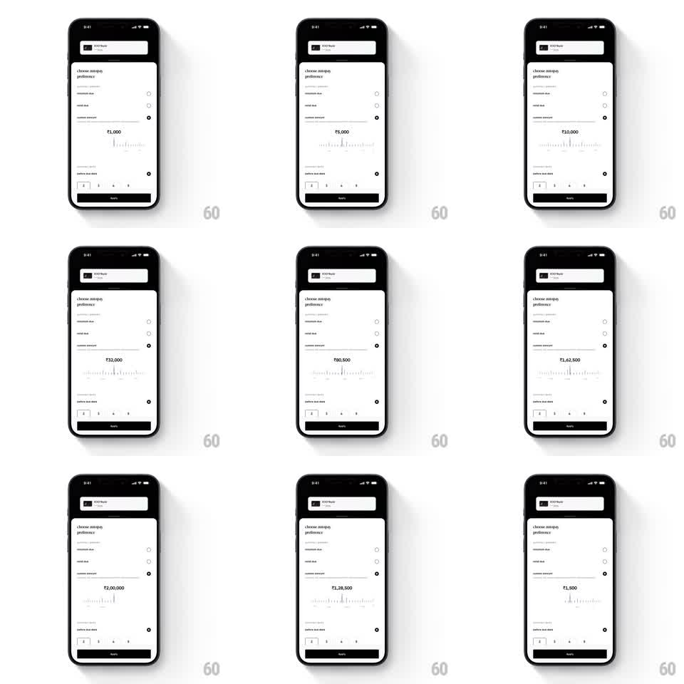

Media
Frame-by-frame

Rebuild this interaction 1:1: CRED's custom amount slider - dragging along a horizontal ruler of tick marks scrubs the payment amount (₹1,000 up to ₹2,00,000 and back), the counter updating live with tick feedback and rupee formatting.

Rebuild this interaction 1:1: CRED's custom amount slider - dragging along a horizontal ruler of tick marks scrubs the payment amount (₹1,000 up to ₹2,00,000 and back), the counter updating live with tick feedback and rupee formatting. ## Integration Integration: stack-agnostic spec - springs given as stiffness/damping, timed motions as duration + curve; map every value to your framework and animation library of choice. ## Scene White payment sheet: CRED Bank header card, "choose autopay preference" section with radio options (custom amount selected), then a large centered amount readout (₹1,000 ... ₹2,00,000), a horizontal ruler strip of vertical tick marks (minor/major heights) beneath it, a "before due date" reminder row, and an Apply button with stepper chips. ## Motion spec Pattern: ruler scrub slider with live counter, continuous while dragging. - Scrub: dragging horizontally moves the ruler under a fixed center marker 1:1 with the finger; ticks passing the center snap softly (magnetism within 4pt) with a tick haptic per major step. - Counter: the amount updates live, rupee-formatted (Indian digit grouping: ₹1,62,500), digits rolling vertically on change (120ms). - Fling: release throws the ruler with decaying momentum (friction ~0.94) until it settles centered on the nearest tick (spring ~380/26, ~300ms). - Range feel: at the min/max ends the ruler resists with a rubber-band stretch (0.35x past the edge) and springs back. ## Calibration - Tick density maps to value steps; major ticks at round thousands with taller strokes. - The counter never lags the ruler - value derives from ruler position, not a timer. ## Reduced motion Ruler moves without momentum; counter cross-fades (100ms). ## Don't miss - Indian digit grouping throughout (₹2,00,000, not ₹200,000). - The ruler readout anchors at the top center - ticks move, the marker stays.